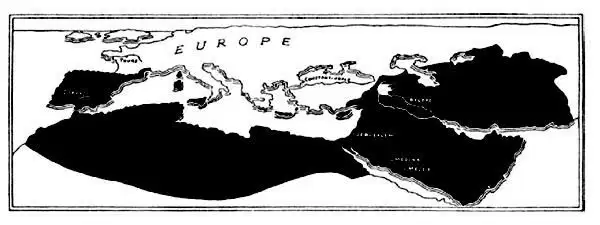
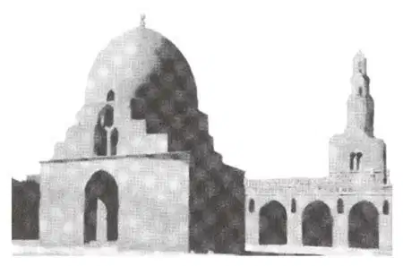
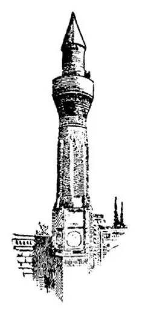
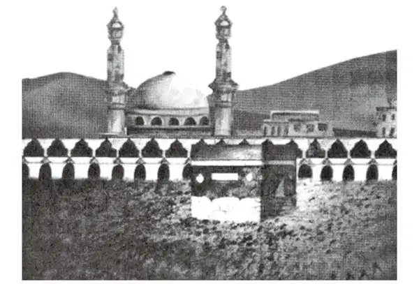

45
Muhammad and the Early Years of Islam
穆罕默德和初期的伊斯兰教

WE have already heard about two religions that began in the part of the world we now call the Middle East. These are Judaism and Christianity. In this story, I'll tell you about a third religion that began in the same area. This religion is called Islam.
Every hundred years is called a century, but a thing that seems a little strange is this—the hundred years from 500 to 600 is called the sixth century, not the fifth; the hundred years from 600 to 700 is called the seventh century, not the sixth, and so on. Well, we have now reached the seventh century, the six hundreds, and we are to learn of a man who was to make a change in the whole world.
There lived in Arabia a man named Muhammad. He was born into humble circumstances. Because his parents died when he was young, he was raised by an uncle. His uncle operated camel caravans, which transported passengers and goods much as trains or trucks do today. The Arabian city of Mecca, where Muhammad lived, was the center of the caravan trade. These camel caravans traveled across the Arabian Desert to North Africa and to the lands along the eastern end of the Mediterranean Sea. Although Muhammad had little formal education, he traveled to many wonderful places with the caravans and met many different kinds of people. While working for his uncle, he met a wealthy Arabian woman named Khadija. They were soon married and lived happily together. Muhammad and Khadija had four daughters.
A remarkable thing happened to Muhammad when he was around forty years old. According to Muslim tradition, the story is told that he was visiting a mountain in the desert, where he often went to study and think. One day the angel Gabriel appeared and delivered a message from God. Muhammad listened to this message and set out to teach it to others. But Muhammad did not intend to start a whole new religion.
He believed in the same God that the Jews and Christians worshiped. In Arabia there were Jews and Christians, as well as others who still worshiped idols. These groups often fought over their religious differences. Muhammad hoped that his teachings would make them more understanding of one another.

World of Islam （伊斯兰世界）
Muhammad saw a lot of unjust and bad behavior around him. He taught that people should change their selfish ways of living and be more concerned for those less fortunate. But, of course, it is impossible to get everyone to agree to change. A new religion began, instead, among those people who believed in Muhammad's teachings. His followers became known as Muslims, and their religion is called Islam. Islam means “submission” to God.
Khadija was the first to follow her husband's teachings. Soon others in Mecca followed, but there were some who wanted to stop Muhammad's teachings. In 622 A. D. Muhammad and his followers moved from Mecca to the city of Medina. This first migration is called the Hegira. Some years later, they returned to Mecca, but Muslims today still teach the story of the angel Gabriel appearing before Muhammad and of the Hegira.
The Muslims began their calendar with the year of the Hegira, calling 622 A.D. the Year 1, just as Christians began their calendar from the year of Jesus's birth and the Romans from the year of the founding of their city. Have you noticed that the Christians, the Romans, and the Muslims each have a different Year 1 ?

In 622 A. D. Muhammad and his followers moved from Mecca to the city of Medina.
公元622年，穆罕默德和他的信徒们从麦加城迁移到麦地那城。
Muhammad lived only ten years after the Hegira; that is, until 632 A. D. The new Muslim leaders were called caliphs. The caliphs continued to spread Muhammad's teachings. The first caliph was Abu Bakr; the second was named Omar. These teachings from God were written down and became the Qur'an（sometimes spelled as Koran）, the Muslim holy book. “Qur'an” comes from a word that means “to recite” because Muslims learn to recite the Qur'an when they are young.
“Allah” is the Arabic word for God. When Muslims pray to Allah, they are praying to the same God that Christians and Jews worship. Muslims believe that Muhammad was the last of God's prophets. They also believe that Abraham, Moses, and Jesus were also God's prophets.
Muslims worship in a building called a mosque, just as Christians worship in a church, and Jews worship in a synagogue or temple. They also pray five times each day, if possible, wherever they may be. A man called a muezzin goes out on the balcony of a minaret, or tower, of a mosque and calls aloud, “Come to prayer. Come to prayer. There is but one God, and He is Allah.”
When Muslims pray, they face toward the city of Mecca because the holiest shrine of Muslims, called the Ka'ba, is located there. At least once in their lifetime, Muslims try to make the pilgrimage to the holy city of Mecca.
During the early years of Islam, its leaders were building an empire, much of it in the lands that had once been a part of the Roman Empire. Muslim armies traveled around the Mediterranean, through the Middle East, all the way to Constantinople.
At Constantinople, the gateway from Asia to Europe, they were turned back by Christians, who poured hot tar and burning oil from the walls of the city. The Muslims tried many times to capture Constantinople but without success. Muslim armies also went westward through North Africa, across the Strait of Gibraltar into Spain and across the Pyrenees Mountains into southern France. In 732 A. D., just one hundred years after the death of Muhammad, they met their match near the town of Tours in France.

Muezzin on minaret
calling to prayer
穆安津在塔楼上呼唤众
人来祈祷
The king of France had a right-hand man named Charles, who had been nicknamed Charles the Hammer because he could strike such terrific blows. Charles was also called Mayor of the Palace, which meant that he was the chief servant of the king. Charles the Hammer and his French soldiers defeated the Muslims and kept them from moving farther into Europe.

When Muslims pray, they face toward the city of Mecca…
the holiest shrine of Muslims called the Ka'ba is located there.
穆斯林祈祷的时候，都面朝麦加城的方向……
穆斯林最神圣的神祠克尔白就坐落在那里。
In just a century, Islam had spread far and wide. People in countries bordering the Mediterranean, from Constantinople, all the way around North Africa on the southern edge, and north through Spain into France, lived under Muslim rulers. Many ordinary people had become Muslim. Even today, Islam is the main religion in the Middle East and North Africa.
【中文阅读】
我们已经知道有两大宗教起源于世界上我们现在称为中东的那个地区，这两大宗教就是犹太教和基督教。在这个故事中，我要给你讲一讲这同一地区产生的另一种宗教，这种宗教叫做伊斯兰教。
每一百年被称为一个世纪，但有件事似乎有点奇怪——从500年到600年这一百年叫6世纪，而不是5世纪；从600年到700年这一百年叫7世纪，而不是6世纪，等等。那好，我们现在讲到了7世纪，也就是公元六百零几年的时候。我们就要听说到一个将要给全世界带来变化的人。
在阿拉伯，有个叫穆罕默德的人，他出生于一个低微的家庭。因为父母在他很小的时候就去世了，他是被叔叔抚养大的。他的叔叔经营着骆驼旅行队，运送旅客和货物，就像现在的火车或卡车的作用。阿拉伯的麦加城是旅行队贸易的中心，穆罕默德就住在麦加城。这些骆驼旅行队穿过阿拉伯沙漠到达北非和地中海东端沿岸 的地区。尽管穆罕默德没有受过什么正规教育，但他随着旅行队游历过很多奇妙的地方，见过形形色色的人。他在为叔叔工作的时候，遇到了一个富有的阿拉伯女人，名叫赫蒂彻。很快，他们就结婚了，幸福地生活在一起，穆罕默德和赫蒂彻有四个女儿。
大约在穆罕默德40岁的时候，他遇到了一件非同寻常的事情。据穆斯林的传说，事情的经过是这样的：穆罕默德正在拜访一座沙漠里的山，他经常去那里学习和思考。有一天，天使加百列在他面前显灵，传达了上帝的启示。穆罕默德聆听了上帝的启示，开始向人们传道，宣讲上帝的启示。但是，穆罕默德并没有打算创立一门全新的宗教。
他信奉的上帝也就是犹太人和基督徒崇拜的上帝。在阿拉伯，既有犹太教徒和基督徒，也有信奉诸多神灵的其他一些人。这些群体经常因为宗教信仰的不同而发生冲突，穆罕默德希望他的教诲可以让他们增进相互的理解。
穆罕默德看到周围有许多不公平和恶劣的行为，他就教诲众人要转变自私自利的生活方式，更加关心那些不幸的人们。然而，让每个人都愿意做出改变当然是不可能的。但是，在信奉穆罕默德教诲的众人中，却诞生了一个新的宗教。他的信徒们逐渐被称为穆斯林，而他们的宗教则被称为伊斯兰教。“伊斯兰”的意思是“顺从上帝”。
赫蒂彻是第一个听从她丈夫教诲的人。很快，麦加城里的其他人也开始追随穆罕默德，不过也有些人想要阻止他布道。公元622年，穆罕默德和他的信徒们从麦加城迁移到麦地那城。这第一次迁移称为“希吉拉” ［1］ 。几年后，他们又回到了麦加城。今天的穆斯林仍然在传播加百列在穆罕默德面前显灵和希吉拉的故事。
穆斯林是从希吉拉那一年开始纪年，把公元622年称为他们的元年，就像基督徒从耶稣诞生的那一年、罗马人从建立罗马城那一年开始纪年一样。你注意到了吗？基督徒、罗马人和穆斯林各自有不同的元年。
穆罕默德在希吉拉之后只活了十年，也就是说他活到了公元632年。那些新继任的穆斯林领袖都被称为“哈里发” ［2］ 。哈里发继续传播穆罕默德的教诲。第一任哈里发是阿布—伯克尔，第二任哈里发叫奥马尔。后来，这些来自上帝的教导被记录下来，成为《古兰经》（也可译为《可兰经》）。“古兰”来自“诵读”一词，因为穆斯林在幼年就学习诵读《古兰经》了。
“安拉”是阿拉伯语中对上帝的称呼。当穆斯林向安拉祈祷时，他们就是在向基督徒、犹太教徒所礼拜的那个上帝祈祷。穆斯林认为，穆罕默德是最后一位上帝的先知。他们认为亚伯拉罕、摩西和耶稣也都是上帝派来的先知。
穆斯林在一个叫“清真寺”的建筑里做礼拜，就像基督徒在教堂里做礼拜、犹太教徒在犹太会堂或教堂做礼拜一样。不管在什么地方，如果可以的话，他们还要一天祈祷五次。每一次，一个称作穆安津的人就会来到光塔、塔楼或清真寺的阳台 上，大声呼唤：“来祈祷吧，来祈祷吧，只有一个真主，他就是安拉。”
穆斯林祈祷的时候，都面朝麦加城的方向，因为穆斯林最神圣的神祠克尔白就坐落在那里。穆斯林在一生之中，至少要设法到圣城麦加去朝圣一次。
在伊斯兰教早期，伊斯兰教的领袖们建立了一个帝国，这个帝国的大量土地都曾是罗马帝国的领土。穆斯林的军队绕过地中海，穿过中东，一路进军来到了君士坦丁堡。
在君士坦丁堡这个亚洲通向欧洲的大门前，城里的基督徒将滚烫的焦油和燃烧的煤油从城墙上倾泻下来，把穆斯林挡了回来。穆斯林又多次设法攻占君士坦丁堡，但是都失败了。穆斯林的军队也向西穿过北非，跨越直布罗陀海峡进入西班牙，还越过比利牛斯山脉进入了法国南部。公元732年，正好是穆罕默德去世后一百年，他们在法国靠近图尔城的地方遇到了强劲的对手。
法国的国王有个得力助手叫查理，绰号“铁锤查理”，因为他打击起敌人来就像铁锤那样有力。查理也被称为“宫长”，这意味着他是国王的亲信。“铁锤查理”带领他的法国士兵们打败了穆斯林，阻止了他们向欧洲进一步扩张。
仅仅过了一个世纪，伊斯兰教就广泛地传播开来。地中海周边各国人民，从君士坦丁堡直到南边的北非、北边的西班牙再到法国，都生活在穆斯林的统治之下。许多普通民众都成了穆斯林。甚至今天，伊斯兰教仍然是中东和北非的主要宗教。